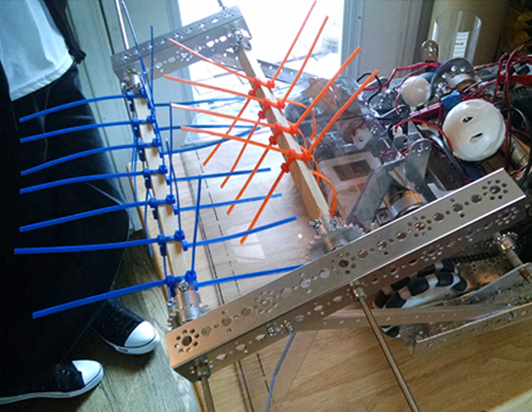

Written by Jayesh Sharma

Task: Finalize ball intake system
The ball intake mechanism of the robot has finally been given a mostly working design. The plastic ramp
and the dual-row system of twist ties has been pretty effective with moderate power driving both rows.
Reoccurring tests were created to observe what would function best; higher power in the first +lower in
the second, lower in first+ higher in the second, or equal power for both. So far it is hard to tell which
combination is better. Maybe that is because we were feeding the balls into the system by hand and driving
the dual beaters with drills. We can test better when we have the motor mounted and the robot driving around.
Also, right now the ramp is just duct-taped to the motors.
Reflections
Our Testing of the mechanism is constantly improving the robot and having multiple squads makes the tasks efficient.
Our blog additions are constantly growing, while the allowance for formatting will only be after
we have our main ideas listed out and ready to be enhanced. Today we caught up on previous meets with the other
SEM team and additions to our robot design. This ability to continue archiving our daily activities will
be great use for our future endeavours. I don't think we'll blog about blogging anymore. Otherwise
we'll have to blog about blogging about blogging ....